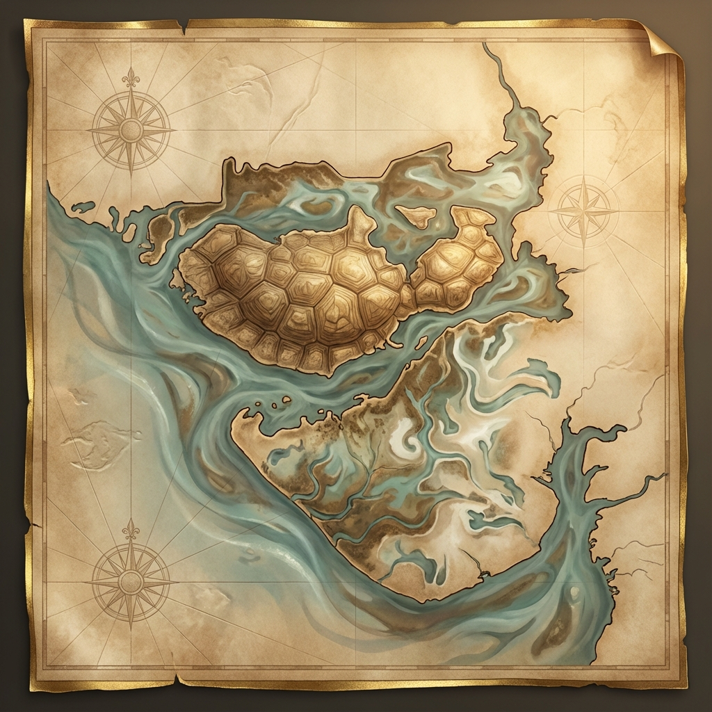

The history of Kutch spans over 5,000 years — from the sophisticated cities of the Indus Valley Civilization to the legendary Jadeja Dynasty that ruled for 500 years. This land has witnessed the rise and fall of empires, the migration of ancient tribes, and the birth of a unique cultural identity that has survived earthquakes, invasions, and the test of time.
Why 'Kutch'?
The origin of the name
The name 'Kutch' is as unique as its landscape. Derived from the ancient Sanskrit word for a tortoise, it perfectly describes the turtle-like shape of this land as it emerges from the dampened Rann.
"A land that is damp, low-lying, and surrounded by water."
Centuries before it was called Kutch, the Greeks knew it as Aabhir, named after its original pastoral dwellers — the brave Aabhir tribes who roamed these lands.

Timeline of Kutch
Journey through 5000 years
Cradle of Civilization
Before empires rose, Kutch was the heartbeat of the Indus Valley Civilization. In the salt-strewn plains of Khadir Bet, Dholavira stood as a marvel of ancient engineering — a sophisticated city of stone reservoirs and astronomical precision that matched the grandeur of Mesopotamia.
Today, Dholavira is a UNESCO World Heritage Site, recognized as one of the five largest Harappan cities.

The Rajput Frontier
During the 8th century, the Chavda Dynasty held sway over the region, establishing powerful strongholds like Kanthkot. It was a time of epic resistance, where Kutch served as a strategic refuge for Rajput kings during the invasions of the great dynasties.
The Chavda rulers built impressive forts and temples, many of which still stand as testaments to their architectural prowess.
Migration of the 9 Lakhs
In historic waves of migration, the Samma Rajputs crossed the Rann from Sindh. Legend tells of the 9 Lakh (900,000) Samma tribesmen who arrived and transformed the social fabric of Kutch.
These migrants eventually evolved into the ruling Jadeja Dynasty that would define Kutch for the next 500 years.
The Sovereign State
Khengarji I changed history by founding the capital of Bhuj and the strategic port of Mandvi. Kutch flourished as an autonomous state, striking its own silver currency (the Kutch Kori) and famously securing exemption from Mughal tribute in exchange for protecting pilgrims to Mecca.
- Bhuj: Founded as the new capital in 1548
- Mandvi Port: Became a major trade hub
- Kutch Kori: Own silver currency minted

A Princely Legacy
Under British suzerainty, the Maharaos of Kutch became master builders. Pragmalji II commissioned the Gothic Prag Mahal, while Khengarji III looked to the future, establishing the Kutch State Railway and the global gateway of Kandla Port.
🏰 Architectural Highlights
- Aina Mahal: Hall of Mirrors, built with Venetian glass
- Prag Mahal: Gothic palace with Italian marble
- Vijay Vilas Palace: Beach palace at Mandvi
Renewal & Resilience
From a separate Class-C state in independent India to becoming Gujarat's largest district, Kutch's modern history is one of incredible resilience.
⚠️ The 2001 Earthquake
On January 26, 2001, a devastating 7.7 magnitude earthquake struck Bhuj, killing over 20,000 people and destroying much of the region. But the spirit of Kutch proved unbreakable — the region has seen a miraculous revival, rebuilding itself and transforming into India's cultural crown jewel.
Today, Kutch is India's largest district, home to Asia's largest private port (Mundra), and hosts the famous Rann Utsav that attracts millions of visitors each year.